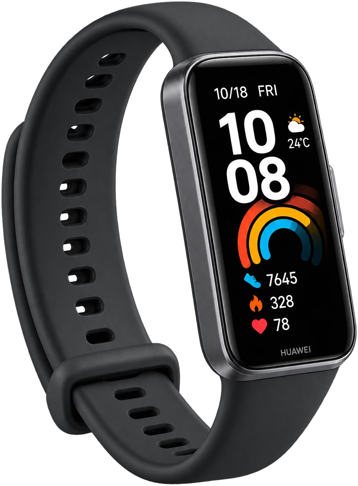

ESCRITÓRIO DO CUIDADO10 — 10
@fairhealth.br
E para você,
o que é importante?
Conta pra gente nos comentários.
Fazemos o certo pelos motivos certos
Como funciona o Escritório do Cuidado.
Pertinho de onde você já está. Sem deslocamento, sem fila.
Olhando para a pessoa inteira.
Uma conversa sobre sua rotina, seus hábitos e sua saúde.
E pergunta:
É a partir da sua resposta que o cuidado ganha sentido.

Bioimpedância e uma smartband por 48 horas, para conhecer seu sono e seu dia a dia de verdade.
Para entender, não para julgar.
Ações nos pilares da Medicina do Estilo de Vida, montadas a partir do que é importante para você.
E segue junto, ajustando o plano quando a vida muda.
Fica entre você e quem cuida. A empresa só vê dados do grupo, sem identificar ninguém.
Conta pra gente nos comentários.
Fazemos o certo pelos motivos certos